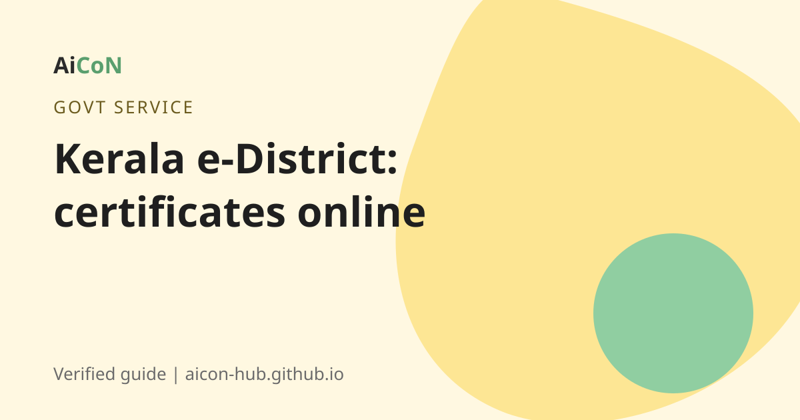

Kerala e-District: apply for income, caste and nativity certificates online
Kerala runs one official website for revenue certificates: e-District. You make one account, then apply for income, caste, nativity and many other certificates from home. No account or no computer? An Akshaya centre can do it for you.

What is e-District?
e-District is the Kerala government's online portal for citizen services. The website is edistrict.kerala.gov.in. Its services page lists many Revenue Department certificates, such as the possession certificate, income certificate, caste certificate, nativity certificate, one and the same certificate, community certificate, relationship certificate and family member certificate.
The portal says you can keep one account and create different registration profiles under it, for yourself and your family. Basic details are filed once and reused in other services. That saves time.
Who needs these certificates?
Students need them for scholarships and admissions. Families need them for welfare schemes, job applications and reservation benefits. Most Kerala government forms ask for at least one of them.
How to apply, step by step
- Open edistrict.kerala.gov.in in your browser. Type the address yourself. Do not click a link from a message.
- Choose Create Account and fill in all the required fields. Your name, date of birth and Aadhaar number are checked against the Aadhaar database.
- Enter your name exactly as it is on your Aadhaar card. The portal FAQ gives an example: if Aadhaar says "Hareesh Kumar M T" and you type "M T Hareesh Kumar", the check fails.
- Enter the OTP you receive and finish creating the account.
- Log in, pick the certificate you need and fill in the form.
- Upload the supporting documents. The portal FAQ lists the documents needed for each certificate.
- Pay the fee online if one applies, then submit.
- Note your application number. Use the portal's track application option to see the status.
- When the certificate is issued, download it from the portal.
No computer or smartphone?
Go to your nearest Akshaya centre. The staff can submit the application for you. If you applied through an Akshaya centre before, a registration may already exist. The portal's duplicate check lets you pull the old registration number with an OTP sent to your registered mobile.
How long is each certificate valid?
This comes from the official e-District FAQ. Apply again when the time is over.
| Income certificate | 1 year |
|---|---|
| Non-creamy layer certificate | 1 year |
| Caste certificate | 3 years |
| Community certificate | 3 years |
| Family membership certificate | 3 years |
| Destitute certificate | 3 years |
| Identification certificate | 10 years |
| Nativity certificate | Life long |
| Domicile certificate | Life long |
| Legal heir certificate | Life long |
| One and the same certificate | Life long |
| Possession, location, relationship and some others | For the specific purpose |
Caste or community? Read this before you apply
This confuses many people. The portal FAQ says community certificates are issued for the SC/ST category. Caste certificates are issued for the OBC category. If you belong to OBC and do not see OBC in the community certificate form, choose caste certificate instead.
Check if a certificate is real
The portal has a public certificate verification page. You can check a certificate and track an application there. Offices and employers can use it too.
Cost, eligibility and limits
| Using the portal | Free to register. Some certificates carry a government fee, paid online. |
|---|---|
| Akshaya centre | Centres can charge a service fee. Ask the rate before you hand over documents. |
| Who can use it | Residents of Kerala. You need a valid Aadhaar number linked to a mobile number. |
| Available in India | The service is for Kerala certificates. It works from anywhere with internet. |
Stay safe
- Use only the official edistrict.kerala.gov.in site or an authorised Akshaya centre.
- Agents who charge extra for "fast track" certificates are not part of the service.
- Never share your OTP with anyone who calls you.
Frequently asked questions
Is e-District free?
Making an account is free. Some certificates have a fee. The portal shows it before you pay.
How long does it take to get a certificate?
It depends on the certificate and the village office. Check the portal for your application status.
I am from another state. Can I use it?
The portal is for Kerala government certificates, so it is meant for Kerala residents.
My Aadhaar check keeps failing. Why?
Name, date of birth and Aadhaar number must match the Aadhaar database exactly. Match the order of initials too.
Do I need to apply at the village office?
Not if you apply online. The village office still processes your application behind the scenes.
Sources: Kerala e-District, e-District FAQ, e-District services list, e-District features. Checked 6 October 2026.